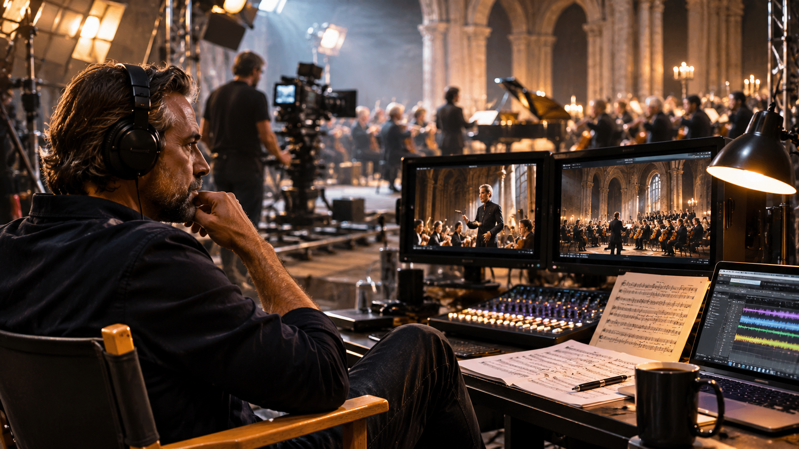
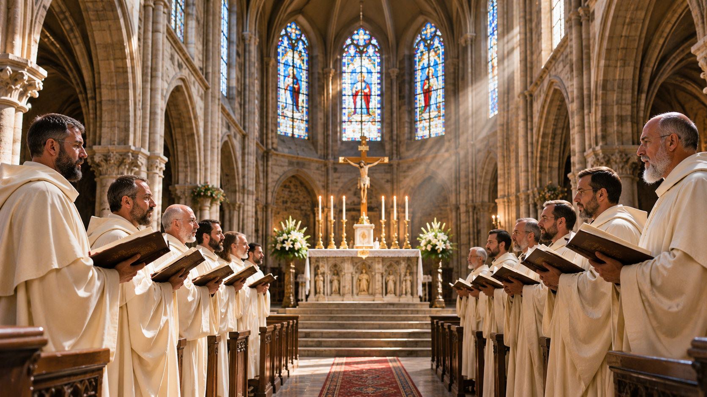

STUDIOSB6L · BANDA 6 LATINOS
面向电影与电视的原创电影配乐
STUDIOSB6L 与 BANDA 6 LATINOS 呈现适用于影视制作的管弦乐、电影感独立摇滚及戏剧性音乐作品。
聆听与探索
精选作品
 Theatrical Vicious Circle
Theatrical Vicious Circle Salve Regina: Symphonia Misericordiae
Salve Regina: Symphonia Misericordiae Come What May
Come What May What Is a Life Worth
What Is a Life WorthSTUDIOSB6L · MUSIC FOR PICTURE
为影像而创作的音乐

STUDIOSB6L 呈现为影视叙事而创作的原创音乐，涵盖管弦乐、电影感摇滚和戏剧性音乐。
圣乐与合唱作品

从受格里高利圣咏启发的合唱氛围，到宏大的宗教主题管弦乐作品。
官方音乐目录
可通过官方 SoundCloud 播放列表试听作品。试听不代表获得使用授权。
任何商业使用均须另行取得书面许可并确认相关权利。
影视音乐同步授权
面向音乐总监与影视制作人
如需将音乐用于电影、电视、广告等项目，请提供作品名称、项目性质、使用地区、媒体及使用期限。
作者及作曲: Benvindo Pereira da Silva Ferreira
商务联系: studiosb6l@gmail.com